Touch Controls
- Creating and setting up a Custom Controller
- Creating and setting up a Touch Controller
- Creating and setting up Touch Controls
Other Controls
General Information
Requirements
- Unity 5.0+ (5.3+ for optimal results)
- Understanding of Unity UI
- Understanding of Rewired and Controller Maps
- Understanding of Custom Controllers
Scene requirements
- There must be one enabled Event System in the scene with a Standalone Input Module component. It is recommended that you use the Rewired Standalone Input Module instead of the default Unity component, but it is not a requirement.
- There must be a Canvas component on a parent of a Touch Controller and all Touch Controls.
- The Canvas "Render Mode" property must be set to either "Screen Space - Overlay" or "Screen Space - Camera". "World Space" is not supported.
Installation
You will have the option to install the Touch Controls pack on initial installation of Rewired. If you do not install it at this time, you can install it at any time from the menu:
- Window -> Rewired -> Extras -> Touch Controls -> Install
To uninstall, delete the Rewired/Extras/TouchControls folder.
Overview
Rewired's Touch Controls use Unity's UI system. In order to use Touch Controls, you should have at least a basic understanding of Unity's UI system because you will be using this UI system to position and size the controls to fit your needs. If you do not have any experience using Unity UI, you can start with these Unity UI tutorials.
Touch Controls are a type of Component Control. Please see Component Controls for background information.
There are two component types:
- Touch Controller - Manages a set of controls.
- Touch Control - Individual buttons, joysticks, touch pads, etc.
The Touch Controller is responsible for collecting input data from its individual child controls, and in most cases, sending that data to a Custom Controller. Touch Controls utilize the Custom Controller system in order to pipe user input into the Rewired Player-Action system. (While it is possible to use Touch Controls directly without a Custom Controller by using the exposed event fields in the inspector of each control, this is not recommended because it does not allow you to take advantage of Rewired's Player-Action system.)
Each Touch Control must always be the child of a Touch Controller in the Unity scene Hierarchy. The hierarchy of a an example Touch Controller with its child controls would look like this:
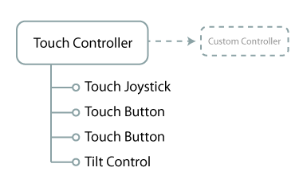
In the example above, the Touch Controller component points to a Rewired.CustomController class object which will receive the data from the touch joystick, the two touch buttons, and a tilt control. Each control will get the user input and send that data back to the Touch Controller component, which will feed it into the target Custom Controller elements pointed to in the inspector. The input will be piped into the Rewired Player-Action system and the Player who is assigned the Custom Controller will receive the input. The game-side code for getting input remains unchanged regardless of whether the input is coming from a physical joystick, keyboard, mouse, touch controller, tilt control, etc.
You will notice the Tilt Control in the list above parented underneath a Touch Controller component. Even though a Tilt Control isn't a touch control, it can still be parented underneath a Touch Controller component and it will work because Touch Controller inherits from Custom Controller component and fulfills all requirements of the Tilt Control.
There are four steps to setting up Touch Controls:
- In the Rewired Editor:
- Create a Custom Controller.
- Create a Custom Controller Map for the new Custom Controller and and assign it to a Player.
- In the scene:
- Create a Touch Controller and configure it to use the Custom Controller you created.
- Create each Touch Control and configure it to send its input data to an element in the Custom Controller.
Step-by-step tutorials of the process can be found here:
- Creating and setting up a Custom Controller
- Creating and setting up a Touch Controller
- Creating and setting up Touch Controls
Controllers
Touch Controller
A Touch Controller is responsible for managing a set of touch controls and sending input data to a Custom Controller. A Touch Controller component must exist as the parent of all touch controls.
Requirements
- A Canvas component must exist on a parent GameObject.
- An Event System must exist in the scene and be enabled.
Creating
Select the following from option from the menu:
- GameObject -> Create Other -> Rewired -> Touch Controls -> Touch Controller
If you already have a Canvas in your scene that you want the Touch Control to be created underneath, select it before creating the Touch Controller from the menu.
If there is no Canvas or Event System in the scene, new ones will be created for you.
Recommendations
- Create a Custom Controller in the Rewired Input Manager which will receive the user input from the controller.
- Link your Rewired Input Manager to the "Rewired Input Manager" field in the inspector.
- Check "Create Custom Controller" and "Destroy Custom Controller" in the inspector for easiest usage.
Tutorials
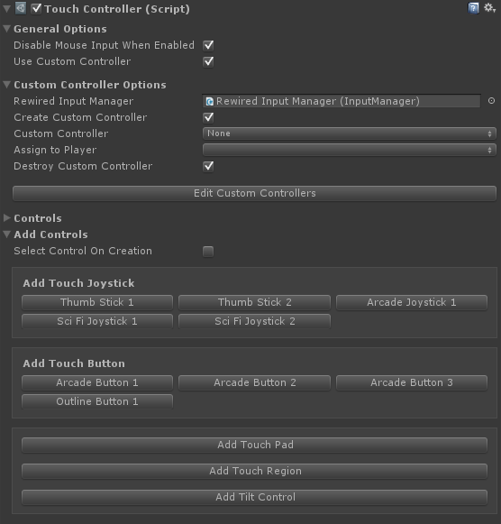
| General Options |
|
| Disable Mouse Input When Enabled | If true, disables mouse input when the Touch Controller script is enabled or GameObject is activated and re-enables mouse input when the script is disabled or GameObject is deactivated. This is useful for disabling Mouse Look controls when using touch controls in an FPS for example. |
| Use Custom Controller | If true, a Custom Controller will be populated with the data from this controller. |
| Custom Controller Options | |
| Rewired Input Manager | (Optional) Link the Rewired Input Manager here for easier access to Custom Controller elements, etc. |
| Create Custom Controller | If true, a new Custom Controller will be created. Otherwise, an existing Custom Controller will be found using the selector properties. |
| Custom Controller | The Custom Controller to create. |
| Custom Controller Source Id | (Shown if Rewired Input Manager is not linked.) The source id of the Custom Controller to create. Get this from the Rewired Input Manager. |
| Assign to Player | The Player that will be assigned this Custom Controller when it is created. |
| Assign to Player Id | (Shown if Rewired Input Manager is not linked.) The Player that will be assigned this Custom Controller when it is created. |
| Destroy Custom Controller | If true, the Custom Controller created by this component will be destroyed when this component is destroyed. |
| Find Using Source Id | (Shown if Rewired Input Manager is not linked.) If true, the Custom Controller will be searched for by its source controller id. This can be used with Find in Player and/or Find Using Tag to further refine the search parameters. |
| Source Id | (Shown if Rewired Input Manager is not linked.) The source id of the Custom Controller. This is used to find the Custom Controller if Find Using Source Id is True." |
| Find Using Tag | (Shown if not creating a Custom Controller.) If true, the Custom Controller will be found using the tag specified here. This can be used with Find in Player and/or Find Using Source Id to further refine the search parameters. |
| Tag | The tag on the Custom Controller you wish to use. This is used to find the Custom Controller. |
| Find In Player | (Shown if not creating a Custom Controller.) If true, the Custom Controller will be searched for in the Player specified in the Player Id field. This can be used with Find Using Source Id and/or Find Using Tag to further refine the search parameters. |
| Player | The Player that owns the Custom Controller to find. |
| Player Id | (Shown if Rewired Input Manager is not linked.) The Player Id of the Player that owns the Custom Controller to find. |
| Controls | Displays all Component Controls found in children of the Touch Controller. |
| Add Controls | Allows you to easily add controls to the Touch Controller. Note that this only allows you to add a control from the default controls included with Rewired. To add a control you've made, you must add it underneath the Touch Controller manually. |
| Select Control On Creation | If enabled, the newly created control will be selected after it is created. Otherwise the current object will remain selected. |
Controls
Touch Button
A Touch Button is an on-screen button control which can be manipulated by touch or by using the mouse pointer.
Requirements
- A Touch Controller component must exist on a parent of the control.
- A Canvas component must exist on a parent GameObject.
- An Event System must exist in the scene and be enabled.
Creating
Select the following from option from the menu:
- GameObject -> Create Other -> Rewired -> Touch Controls -> Touch Button
Inspector Options
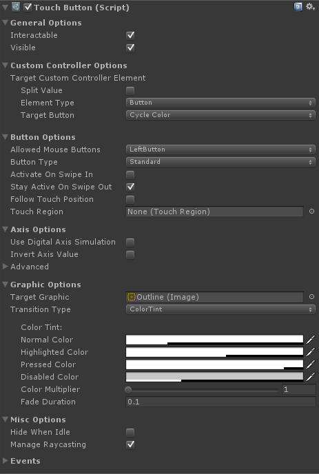
| General Options |
|
| Interactable | Toggles whether the control can be interacted with by the user. |
| Visible | Toggles visibility. An invisible control can still be interacted with. This property only has any effect when used with an Image Component. |
| Custom Controller Options | |
| Target Custom Controller Element | The Custom Controller element that will receive input values from this control. |
| Button Options | |
| Allowed Mouse Buttons | The mouse buttons that are allowed to interact with this control. |
| Button Type | The type of button. Standard: A momentary switch. Returns True while the button is pressed down. Toggle Switch: Alternately turns on and off with each press. |
| Activate On Swipe In | If true, the button can be turned on by a touch swipe that began in an area outside the button region. If false, the button can only be turned on by a direct press. |
| Stay Active On Swipe Out | If true, the button will stay on even if the touch that activated it moves outside the button region. If false, the button will turn off once the touch that activated it moves outside the button region. |
| Follow Touch Position | If True, the button will follow the touch around until released. This setting overrides Move To Touch Position. |
| Touch Region | Optional external region to use for hover/click/touch detection. If set, this region will be used for touch detection instead of or in addition to the button's RectTransform. This can be useful if you want a larger area of the screen to act as a button. |
| Use Touch Region Only | If True, hovers/clicks/touches on the local button will be ignored and only Touch Region touches will be used. Otherwise, both touches on the button and on the Touch Region will be used. This also applies to mouse hover. This setting has no effect if no Touch Region is set. |
| Move To Touch Position | If True, the button will move to the location of the current touch in the Touch Region. This can be used to designate an area of the screen as a hot-spot for a button and have the button graphics follow the users touches. This only has an effect if a Touch Region is set. |
| Animate On Move To Touch | Should the button animate when moving to the touch point? This only has an effect if Move To Touch Position is True and a Touch Region is set. This setting is ignored if Follow Touch Position is True. |
| Move To Touch Speed | The speed at which the button will move toward the touch position measured in screens per second (based on the larger of width and height). [1.0 = Move 1 screen/sec]. This only has an effect if Move To Touch Position is True, Animate On Move To Touch is true, and a Touch Region is set. This setting is ignored if Follow Touch Position is True. |
Return On Release |
If Move To Touch Position is enabled, this will make the button return to its original position after the press is released. This only has an effect if a Touch Region is set. |
| Animate On Return | Should the button animate when moving back to its original position? This only has an effect if Follow Touch Position is True, or if Move To Touch Position is True and a Touch Region is set, and Return on Release is True. |
| Return Speed | The speed at which the button will move back toward its original position measured in screens per second (based on the larger of width and height). [1.0 = Move 1 screen/sec]. This only has an effect if Follow Touch Position is True, or if Move To Touch Position is True and a Touch Region is set, and Return on Release and Animate on Return are both True. |
| Axis Options | |
| Use Digital Axis Simulation | Makes the axis value gradually change over time based on gravity and sensitivity as the button is pressed. |
| Digital Axis Sensitivity | Speed to move toward an axis value of 1.0 in units/sec when pressed. A value of 1.0 means an axis value of 0 will reach 1 over 1 second. A value of 3 equates to 1/3 of a second, and so on. |
| Digital Axis Gravity | Speed (units/sec) that the axis value falls toward 0 when not pressed. A value of 1.0 means an axis value of 1 will drain to 0 over 1 second. A value of 3 equates to 1/3 of a second, and so on. |
| Invert Axis Value | Inverts the axis value of the button. |
| Advanced | Advanced configuration options for the axis. |
| Graphic Options | |
Target Graphic |
The target Graphic component for interaction state transitions. This should normally be set to an Image component on this GameObject. |
| Transition Type | The transition type(s) to be used when transitioning to various states. Multiple transition types can be used simultaneously. See the Unity documentation on Transitions for usage. |
| Visibility Fade Duration | The fade duration of visibility changes. 0 = instant. |
| Misc Options | |
| Hide When Idle | Sets visibility to False when the control is idle. When the control is no longer idle, visibility will be set to True again. |
| Manage Raycasting | If True, it will attempt to automatically manage Graphic component raycasting for best results based on your current settings. (Requires Unity 5.3+) |
| Events | Numerous events are exposed which can be used to drive input directly or for use in certain effects. |
Touch Joystick
A Touch Joystick is an on-screen joystick control which can be manipulated by touch or by using the mouse pointer.
Requirements
- A Touch Controller component must exist on a parent of the control.
- A Canvas component must exist on a parent GameObject.
- An Event System must exist in the scene and be enabled.
Creating
Select the following from option from the menu:
- GameObject -> Create Other -> Rewired -> Touch Controls -> Touch Joystick
Inspector Options
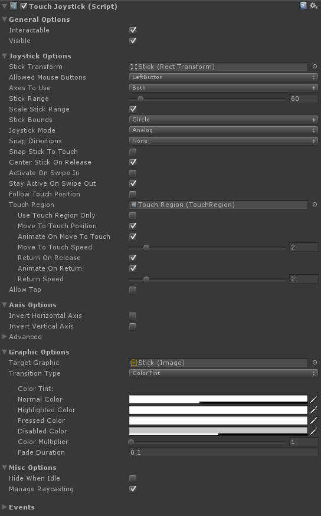
| General Options | |
| Interactable | Toggles whether the control can be interacted with by the user. |
| Visible | Toggles visibility. An invisible control can still be interacted with. This property only has any effect when used with an Image Component. |
| Custom Controller Options | |
| Horizontal Axis Custom Controller Element | The Custom Controller element(s) that will receive input values from the joystick's X axis. |
| Vertical Axis Custom Controller Element | The Custom Controller element(s) that will receive input values from the joystick's Y axis. |
| Tap Custom Controller Element | (Shown if Allow Tap is enabled.) The Custom Controller element that will receive input values from taps. |
| Joystick Options | |
| Stick Transform | The Rect Transform of the stick disc. This is moved around by the user when manipulating the joystick. |
| Allowed Mouse Buttons | The mouse buttons that are allowed to interact with this control. |
| Axes To Use | The axis directions in which movement is allowed. You can restrict movement to one or both axes. |
| Stick Range | The range of movement of the stick in Canvas pixels. The larger the number, the further the stick must be moved from center to register movement. |
| Scale Stick Range | If enabled, the stick range will scale with parent controls. Otherwise, the stick range will remain constant. |
| Stick Bounds | The shape of the range of movement of the joystick. |
| Joystick Mode | The joystick's mode of operation. Set this to Digital to simulate a D-Pad which has only On/Off states. If you want mimic a real D-Pad, you should also set Snap Directions to 8. |
| Snap Directions | Snaps joystick movement to a fixed number of directions. This can be used to create a D-Pad, for example, setting it to 4 or 8 directions. If you want a true D-Pad, Stick Mode should be set to digital. |
| Snap Stick To Touch | If true, the stick disc will snap immediately to the touch position when initially touched. This results in the stick disc being centered to the touch position. This will cause the stick to generate input immediately when touched if not touched perfectly centered. If false, the stick disc will remain in its current position on touch, and when dragged will retain the same offset. The stick's center point will be set to the position of the touch. The initial touch will not cause the stick to pop in any direction. |
| Center Stick On Release | If true, the stick will return to the center after it is released. Otherwise, the stick will remain in the last position and continue to return input. |
| Activate On Swipe In | If true, the joystick can be activated by a touch swipe that began in an area outside the joystick region. If false, the joystick can only be activated by a direct touch. |
| Stay Active On Swipe Out | If true, the joystick will stay engaged even if the touch that activated it moves outside the joystick region. If false, the joystick will be released once the touch that activated it moves outside the joystick region. |
| Allow Tap | Should taps on the touch pad be processed? |
| Tap Timeout | The maximum touch duration allowed for the touch to be considered a tap. A touch that lasts longer than this value will not trigger a tap when released. |
| Tap Distance Limit | The maximum movement distance allowed in pixels since the touch began for the touch to be considered a tap. [-1 = no limit] |
| Follow Touch Position | If True, the joystick will follow the touch around until released. This setting overrides Move To Touch Position. |
| Touch Region | Optional external region to use for hover/click/touch detection. If set, this region will be used for touch detection instead of or in addition to the joystick's RectTransform. This can be useful if you want a larger area of the screen to act as a joystick. |
| Use Touch Region Only | If True, hovers/clicks/touches on the local joystick will be ignored and only Touch Region touches will be used. Otherwise, both touches on the joystick and on the Touch Region will be used. This also applies to mouse hover. This setting has no effect if no Touch Region is set. |
| Move To Touch Position | If True, the joystick will move to the location of the current touch in the Touch Region. This can be used to designate an area of the screen as a hot-spot for a joystick and have the joystick graphics follow the users touches. This only has an effect if a Touch Region is set. |
| Animate On Move To Touch | Should the joystick animate when moving to the touch point? This only has an effect if Move To Touch Position is True and a Touch Region is set. This setting is ignored if Follow Touch Position is True. |
| Move To Touch Speed | The speed at which the joystick will move toward the touch position measured in screens per second (based on the larger of width and height). [1.0 = Move 1 screen/sec]. This only has an effect if Move To Touch Position is True, Animate On Move To Touch is true, and a Touch Region is set. This setting is ignored if Follow Touch Position is True. |
Return On Release |
If Move To Touch Position is enabled, this will make the joystick return to its original position after the press is released. This only has an effect if a Touch Region is set. |
| Animate On Return | Should the joystick animate when moving back to its original position? This only has an effect if Follow Touch Position is True, or if Move To Touch Position is True and a Touch Region is set, and Return on Release is True. |
| Return Speed | The speed at which the joystick will move back toward its original position measured in screens per second (based on the larger of width and height). [1.0 = Move 1 screen/sec]. This only has an effect if Follow Touch Position is True, or if Move To Touch Position is True and a Touch Region is set, and Return on Release and Animate on Return are both True. |
| Axis Options | |
| Invert Horizontal Axis | Inverts the X axis value. |
| Invert Vertical Axis | Inverts the Y axis value. |
| Advanced | Advanced configuration options for the axes. |
| Graphic Options | |
Target Graphic |
The target Graphic component for interaction state transitions. This should normally be set to an Image component on this GameObject. |
| Transition Type | The transition type(s) to be used when transitioning to various states. Multiple transition types can be used simultaneously. See the Unity documentation on Transitions for usage. |
| Visibility Fade Duration | The fade duration of visibility changes. 0 = instant. |
| Misc Options | |
| Hide When Idle | Sets visibility to False when the control is idle. When the control is no longer idle, visibility will be set to True again. |
| Manage Raycasting | If True, it will attempt to automatically manage Graphic component raycasting for best results based on your current settings. (Requires Unity 5.3+) |
| Events | Numerous events are exposed which can be used to drive input directly or for use in certain effects. |
Touch Pad
A Touch Pad is an on-screen touch pad control which can be manipulated by touch or by using the mouse pointer.
Requirements
- A Touch Controller component must exist on a parent of the control.
- A Canvas component must exist on a parent GameObject.
- An Event System must exist in the scene and be enabled.
Creating
Select the following from option from the menu:
- GameObject -> Create Other -> Rewired -> Touch Controls -> Touch Pad
Inspector Options
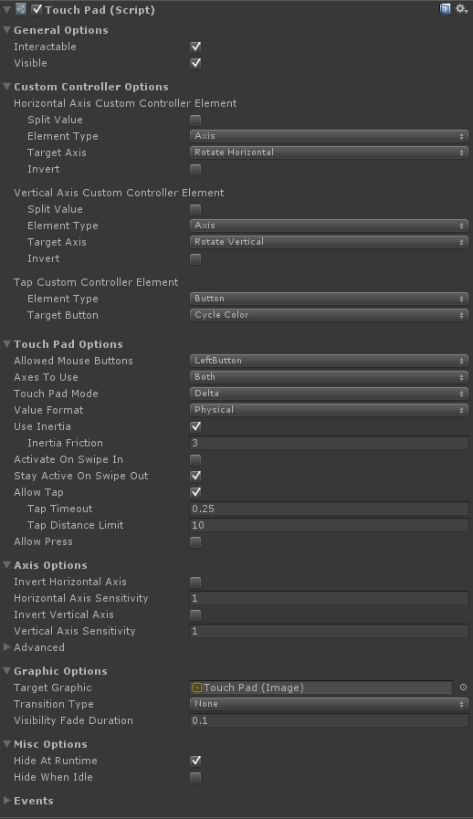
| General Options | |
| Interactable | Toggles whether the control can be interacted with by the user. |
| Visible | Toggles visibility. An invisible control can still be interacted with. This property only has any effect when used with an Image Component. |
| Custom Controller Options | |
| Horizontal Axis Custom Controller Element | The Custom Controller element that will receive input values from the touch pad's X axis. |
| Vertical Axis Custom Controller Element | The Custom Controller element that will receive input values from the touch pad's Y axis. |
| Tap Custom Controller Element | (Shown if Allow Tap is enabled.) The Custom Controller element that will receive input values from touch pad taps. |
| Press Custom Controller Element | (Shown if Allow Press is enabled.) The Custom Controller element that will receive input values from touch pad presses. |
| Touch Pad Options | |
| Allowed Mouse Buttons | The mouse buttons that are allowed to interact with this control. |
| Axes To Use | The axis directions in which movement is allowed. You can restrict movement to one or both axes. |
| Touch Pad Mode | The mode of the touch pad. Delta - Returns the change in position of the touch from the previous to the current frame. Screen Position - Returns the absolute position of the touch on the screen.
|
Value Format |
The format of the resulting data generated by the touch pad. Pixels - Screen pixels. Screen - The proportion of the value to screen size in the corresponding dimension. 1 unit = 1 screen length (width for X, height for Y). Physical - 1 unit = 1/100th of an inch. The resulting value will be consistent across different screen resolutions and sizes. IMPORTANT: This relies on the value returned by UnityEngine.Screen.dpi. If the device does not return a value, a reference resolution of 96 dpi will be used. Direction - A normalized direction vector. |
| Use Inertia | If enabled, when swiped and released, the value will slowly fall toward zero based on the Friction value. This only has an effect if Touch Pad Mode is set to Position Delta. |
| Inertia Friction | (Shown if Use Inertia is enabled.) Determines how quickly a swipe value will fall toward zero when Use Inertia is enabled. |
| Activate On Swipe In | If true, the touch pad can be activated by a touch swipe that began in an area outside the touch pad region. If false, the touch pad can only be activated by a direct touch. |
| Stay Active On Swipe Out | If true, the touch pad will stay engaged even if the touch that activated it moves outside the touch pad region. If false, the touch pad will be released once the touch that activated it moves outside the touch pad region. |
| Allow Tap | Should taps on the touch pad be processed? |
| Tap Timeout | (Shown if Allow Tap is enabled.) The maximum touch duration allowed for the touch to be considered a tap. A touch that lasts longer than this value will not trigger a tap when released. |
| Tap Distance Limit | (Shown if Allow Tap is enabled.) The maximum movement distance allowed in pixels since the touch began for the touch to be considered a tap. [-1 = no limit] |
| Allow Press | Should presses (continual press like a button) on the touch pad be processed? |
| Press Start Delay | (Shown if Allow Press is enabled.) Time the touch pad must be touched before it will be considered a press. |
| Press Distance Limit | (Shown if Allow Press is enabled.) The maximum movement distance allowed in pixels since the touch began for the touch to be considered a press. Any movement beyond this value will cancel the press. [-1 = no limit] |
| Axis Options | |
| Invert Horizontal Axis | Inverts the X axis value. |
| Horizontal Axis Sensitivity | Sensitivity of the X axis. |
| Invert Vertical Axis | Inverts the Y axis value. |
| Vertical Axis Sernsitivity | Sensitivity of the Y axis. |
| Advanced | Advanced configuration options for the axes. |
| Graphic Options | |
| Target Graphic | The target Graphic component for interaction state transitions. This should normally be set to an Image component on this GameObject. |
| Transition Type | The transition type(s) to be used when transitioning to various states. Multiple transition types can be used simultaneously. See the Unity documentation on Transitions for usage. |
| Visibility Fade Duration | The fade duration of visibility changes. 0 = instant. |
| Misc Options | |
| Hide At Runtime | If enabled, the control will be hidden when gameplay starts. |
| Hide When Idle | Sets visibility to False when the control is idle. When the control is no longer idle, visibility will be set to True again. |
| Events | Numerous events are exposed which can be used to drive input directly or for use in certain effects. |
Touch Region
A Touch Region is a control which is used to activate another control remotely. This allows you to specify an area of the Canvas to be used to activate the control.
For a control to use the Touch Region, the Touch Region field in the control must be linked to the Touch Region. See the inspector options for the control you wish to use for information about the Touch Region field and related options.
Requirements
- A Touch Controller component must exist on a parent of the control.
- A Canvas component must exist on a parent GameObject.
- An Event System must exist in the scene and be enabled.
Creating
Select the following from option from the menu:
- GameObject -> Create Other -> Rewired -> Touch Controls -> Touch Region
Inspector Options
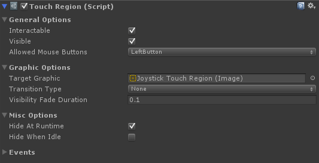
| General Options | |
| Interactable | Toggles whether the control can be interacted with by the user. |
| Visible | Toggles visibility. An invisible control can still be interacted with. This property only has any effect when used with an Image Component. |
| Allowed Mouse Buttons | The mouse buttons that are allowed to interact with this control. |
| Graphic Options | |
| Target Graphic | The target Graphic component for interaction state transitions. This should normally be set to an Image component on this GameObject. |
| Transition Type | The transition type(s) to be used when transitioning to various states. Multiple transition types can be used simultaneously. See the Unity documentation on Transitions for usage. |
| Visibility Fade Duration | The fade duration of visibility changes. 0 = instant. |
| Misc Options | |
| Hide At Runtime | If enabled, the control will be hidden when gameplay starts. |
| Hide When Idle | Sets visibility to False when the control is idle. When the control is no longer idle, visibility will be set to True again. |
| Events | Numerous events are exposed which can be used to drive input directly or for use in certain effects. |
Helper Components
Touch Interactable Transitioner
Allows synchronization of transition states between a Touch Interactable and a Graphic. Add this component to children of touch controls that need transition states or visibility to remain in sync with the parent. This is useful for Text or Image components parented underneath a touch control for example. This allows you to add graphics, text, or other decorations on your touch control and have them animate colors, sprite transitions, etc. in sync with the parent control.
Usage
Add this component to a child of a Touch Button or Touch Joystick that has a Graphic, Text, or Image component and configure the options.
Inspector Options
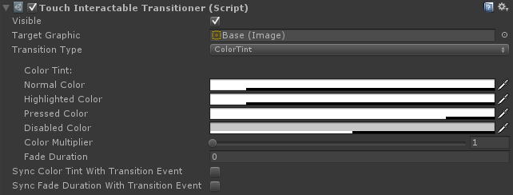
| Visible | Toggles visibility. An invisible control can still be interacted with. This property only has any effect when used with an Image Component. |
Target Graphic |
The target Graphic component for interaction state transitions. This should normally be set to an Image component on this GameObject. |
| Transition Type | The transition type(s) to be used when transitioning to various states. Multiple transition types can be used simultaneously. See the Unity documentation on Transitions for usage. |
| Sync Color Tint With Transition Event | Toggles whether the color tint is set by incoming transition events. If enabled, the color tint transition of the event sender will override any color tint setting here. This setting overrides Sync Fade Duration With Transition Event. |
| Sync Fade Duration With Transition Event | Toggles whether the fade duration is set by incoming transition events. If enabled, the duration of fades for visibility and Color Tint transitions will be synchronized with the event sender. |
Touch Joystick Radial Indicator
Arranges child TouchJoystickAngleIndicator objects in a radial pattern. It is useful for displaying direction indicators for a Touch Joystick in a radial pattern. Assists with scaling and sizing of the child images.
Usage
Add this component to a child of a Touch Joystick, then add more child objects under this, each with a Touch Angle Joystick Indicator component and an Image component.
Inspector Options
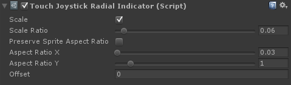
| Scale | If enabled, the indicators will be scaled based on the size of the RectTransform. |
| Scale Ratio | The scale ratio of the indicators to the current RectTransform's height. A ratio of 0.1 means the indicator will be 0.1 times the size of the RectTransform's height. This is useful if you need to be able to scale the transform and have the indicators also scale with it. |
| Preserve Sprite Aspect Ratio | If enabled, the aspect ratio will be determined from the Sprite's texture. |
| Aspect Ratio X | The horizontal component of the desired aspect ratio of the indicator. |
| Aspect Ratio Y | The vertical component of the desired aspect ratio of the indicator. |
| Offset | Offsets the indicator position up by this proportion of its height. 1.0 = 1 unit high offset. |
Touch Joystick Angle Indicator
A visual indicator of the current direction of the joystick. This can be used to make arrows or other visual elements light up when the joystick is pressed in different directions.
Usage
Add this component to a child of a Touch Joystick and configure the settings.
Inspector Options
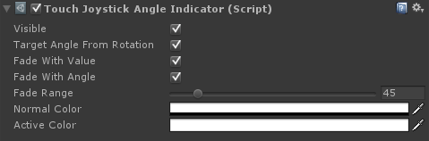
| Visible | Toggles visibility. |
| Target Angle From Rotation | If enabled, the target angle will be determined by the transform's Local Rotation Z. Otherwise, the activation angle must be manually set. |
| Target Angle | The joystick angle at which this object should be considered fully active. 0 = up with negative values increase rotating clockwise. Example: -45 degrees = up-right. |
| Fade With Value | If enabled, the color will fade in and out based on the current joystick value. |
| Fade With Angle | If enabled, the color will fade in and out based on the current joystick angle. As the angle approaches the Target Angle, the color will become more intense. |
| Fade Range | The angle of rotation away from the Target Angle where the color fully fades out. If Fade with Angle is enabled, this is used to determine when the color will fully fade out when the joystick angle rotates away from the the Target Angle. This should be set to 1/2 of the complete rotation arc. Example: A value of 45 degrees would make the color fully fade out when the joystick angle is 45 degrees away from the Target Angle on either side, giving a complete arc of 90 degrees. |
| Normal Color | The color when not active. |
| Active Color | The color when fully active. |
Tutorials
Creating and setting up a Custom Controller
- In the Rewired Editor, create a Custom Controller.
- Create one Axis for each axis you will need in your touch controller. If the axis is a type that returns delta information such as a touch pad, be sure to uncheck the "Calibrate" box in the Axis Properties. (If you don't do this, the axis will be calibrated to a -1 to +1 range.)
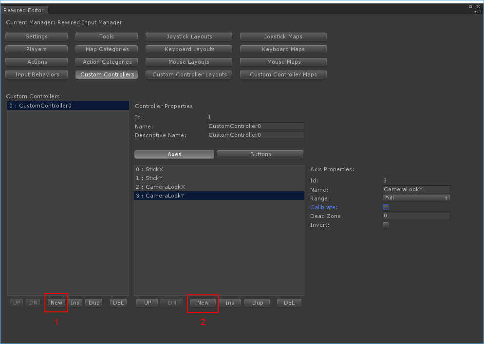
- Create one button for each button your touch controller will need. Be sure to name these buttons something meaningful so you can select them easily later from the Touch Button inspector.
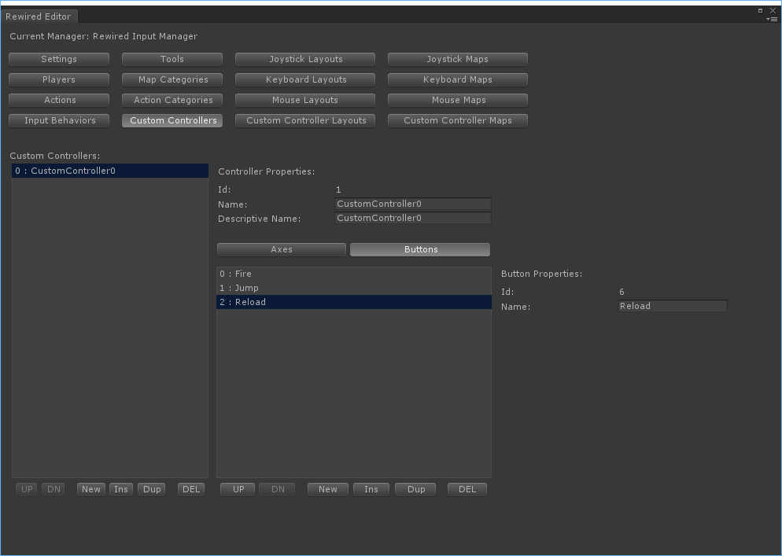
- Now create a Custom Controller Map for this new controller. Map each element you created to an Action.
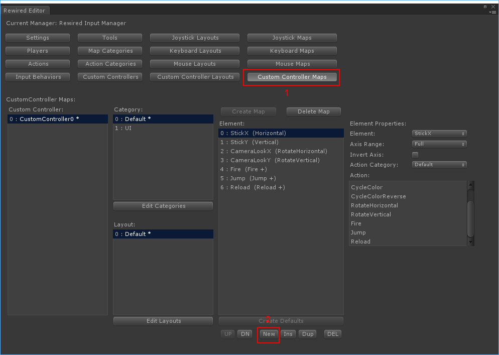
- Assign the Custom Controller Map you created in the previous step to a Player. The Player will load this Custom Controller Map when the Custom Controller is assigned to it. Make sure "Start Enabled" is checked when you add the map.
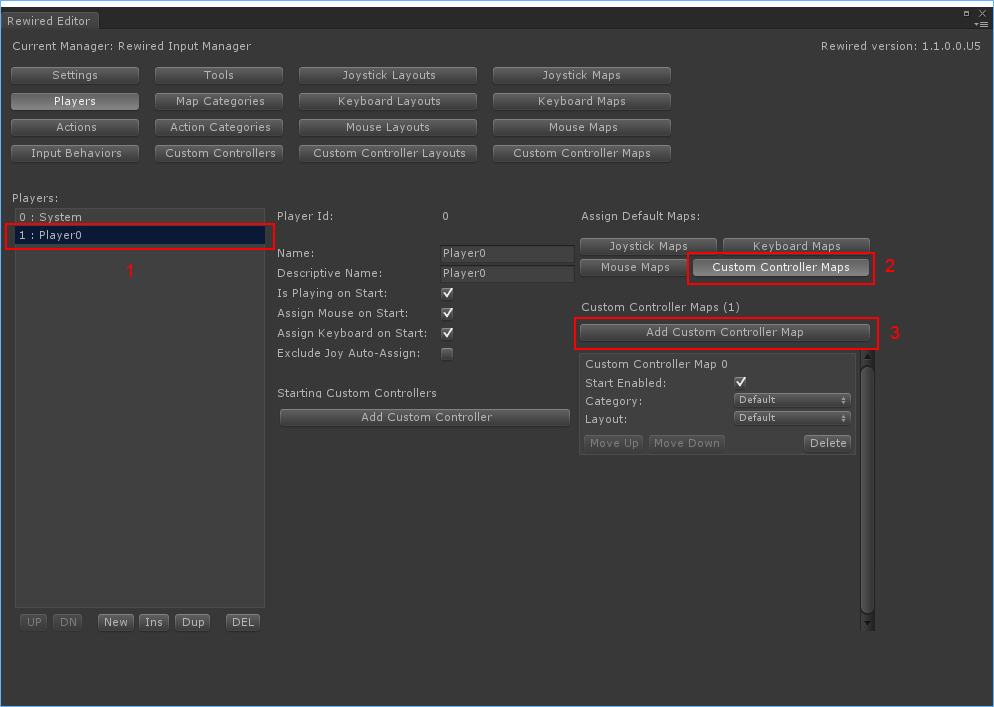
You've created your Custom Controller and Custom Controller Map and assigned it to a Player. Now you will need to create and configure your Touch Controller to use this Custom Controller and each Touch Control to target its respective Custom Controller element. Continue to the next section.
Creating and setting up a Touch Controller
To create a Touch Controller, create one from the menu:
- GameObject -> Create Other -> Rewired -> Touch Controls -> Touch Controller
This will create a new GameObject with a Touch Controller component added. It will also create a Rewired Event System if no Event System exists in the scene and a Canvas if no Canvas exists.
Configuring the Touch Controller
The Touch Controller component is responsible for sending user input data received from its child Touch Controls into the Rewired.CustomController.
The Touch Controller component is essentially a wrapper for the Rewired.CustomController class. This component's inspector allows you to set options which will tell it which Rewired.CustomController to point to.
The first thing you should do is link the Rewired Input Manager you intend to use to the Rewired Input Manager field of the Touch Controller. This is optional, but highly recommended as it allows you to select the Custom Controller and the target elements on that controller by simply selecting them from a drop-down. If you do not link the Rewired Input Manager, you will have to use either string names or id integers to tell the controller and each control which Custom Controller and which elements in which to feed the incoming data.
Click the "Find Rewired Input Manager" button in the inspector to find any enabled Rewired Input Manager in the scene and link it. Otherwise, you can manually link it to the Rewired Input Manager.
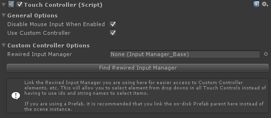
There are two ways to determine the target Rewired.CustomController:
- Instantiate a new Custom Controller from a controller defined in the Rewired Input Manager. (Recommended)
- Search through existing Custom Controllers that have already been instantiated.
Instantiating a new Custom Controller:
The Touch Controller component can instantiate a new Rewired.CustomController from an existing controller definition that you have created beforehand in the Rewired Input Manager. This is the easiest way to work with Custom Controllers and is the recommended option.
A new Rewired.CustomController will be instantiated on Awake of the Touch Controller component and optionally destroyed when the Touch Controller component is destroyed. To enable this, check "Create Custom Controller" and "Destroy Custom Controller" in the inspector. Select a Custom Controller from the list or enter its Source Id, then choose a Player to assign it to when it's instantiated.
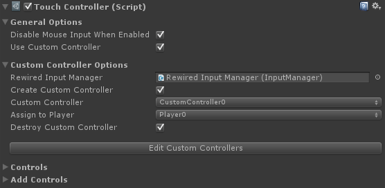
| Create Custom Controller | If true, a new Custom Controller will be created. Otherwise, an existing Custom Controller will be found using the selector properties. |
| Custom Controller / Source Id | (Custom Controller is shown if the Rewired Input Manager has been linked in the Rewired Input Manager field, otherwise Source Id is shown.) Custom Controller: Source Id: |
| Assign To Player / Assign To Player Id | (Assign To Player is shown if the Rewired Input Manager has been linked in the Rewired Input Manager field, otherwise Assign To Player Id is shown.) Assign To Player: Assign To Player Id: |
| Destroy Custom Controller | If true, the Custom Controller created by this component will be destroyed when this component is destroyed. |
Searching for an existing Custom Controller:
If you have already instiantated a Rewired.CustomController through scripting or have set up Rewired to automatically create a Custom Controller on start by adding it under "Starting Custom Controllers" on the Players page of the Rewired Editor, you can set up the Touch Controller component to find that existing Rewired.CustomController and use it for its target.
If you want to search for an existing Rewired.CustomController, the "Create Custom Controller" field must not be checked:
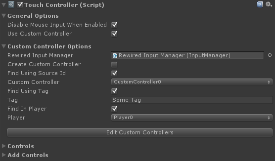
Additional options will appear in the inspector allowing you to set the search parameters:
| Find Using Source Id | If true, the Custom Controller will be searched for by its source controller id. This can be used with Find in Player and/or Find Using Tag to further refine the search parameters. |
| Custom Controller / Custom Controller Id | (Custom Controller is shown if the Rewired Input Manager has been linked in the Rewired Input Manager field, otherwise Custom Controller Id is shown.) Custom Controller: Custom Controller Id: |
| Find Using Tag | If true, the Custom Controller will be found using the tag specified here. This can be used with Find in Player and/or Find Using Source Id to further refine the search parameters. |
| Tag | The tag on the Custom Controller you wish to use. This is used to find the Custom Controller. |
| Find In Player | If true, the Custom Controller will be searched for in the Player specified in the Player Id field. This can be used with Find Using Source Id and/or Find Using Tag to further refine the search parameters. |
| Player / Player Id | The Player Id of the Player that owns the Custom Controller. |
Creating and setting up Touch Controls
As an example, a controller might consist of a Touch Joystick and two Touch Buttons. You can create controls from the Add Controls panel in the Touch Controller inspector or from the GameObject -> Create Other -> Rewired -> Touch Controls menu. You can also build your own controls by creating a new GameObject and adding the individual component, TouchButton for example, and configuring the settings and images. Some sprites and sprite packs (zip files) are included in the Rewired/Extras/TouchControls/Sprites folder which you can use.
Create a Touch Button
Select the Touch Controller object in the hierarchy panel, then create a Touch Button of your choice from Add Controls area in the inspector:
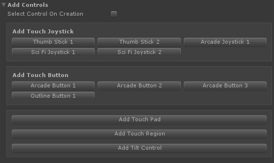
A new GameObject will appear underneath the Touch Controller named "Touch Button." Select this new GameObject.
Configure the Touch Button
The Touch Button has many options which can be customized to make the button behave how you want. See Touch Button for more information about the options available.
The most important thing is to make the button send its data to a particular button in the target Custom Controller. Under the Custom Conroller Options section, select the Target Button drop-down under Target Custom Controller Element and choose the button that will receive the input data.
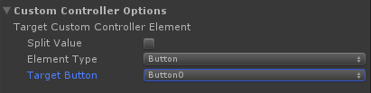
Create a Touch Joystick
Just like you created the Touch Button, create a Touch Joystick. Select the Touch Controller object in the hierarchy panel, then create a Touch Joystick of your choice from Add Controls area in the inspector. A new Touch Joystick will be created underneath the Touch Controller with the name "Touch Joystick." Select the Touch Joystick.
Configure the Touch Joysick
The Touch Joystick has many options which can be customized to make the joystick behave how you want. See Touch Joystick for more information about the options available.
The most important thing is to make the joystick send its data to two axes in the target Custom Controller.Under the Custom Conroller Options section, select the Target Axis drop-down under Horizontal Axis Custom Controller Element and choose the axis that will receive the input data. Do the same for Vertical Axis Custom Controller element.
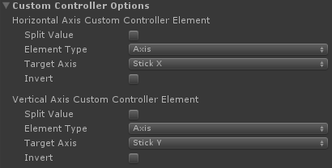
Create a Touch Region for to the Touch Joystick
The Touch Joystick can be used by directly touching it, but say you want the entire left half of the screen to act as a joystick. You can use a Touch Region to define an area of the Canvas to use to activate the Touch Joystick.
To create a Touch Region, select the Touch Controller and under the Add Controls section of the inspector, choose "Add Touch Region." A new Touch Region will be created underneath the Touch Controller.
Configure the Touch Region
To make the Touch Joystick use the Touch Region, you must link the Touch Region to the Touch Joystick in the inspector in the Touch Region field. Drag the Touch Region from the hierarchy into the Touch Region field in the Touch Joystick inspector:
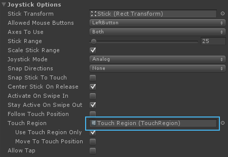
Now uncheck the "Use Touch Region Only" field.
Now check "Move To Touch Position."
The inspector should look something like this:
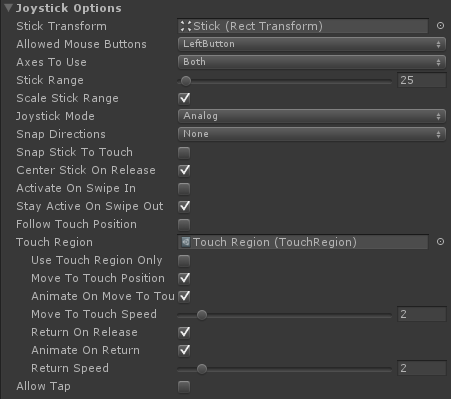
The Touch Joystick will now use the Touch Region as its activation area. Now we need to make the Touch Region cover the left half of the Canvas. Select the Touch Region in the hierarchy panel.
In the Rect Transform options, set the options to match the following:
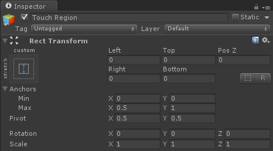
Finally, make sure the Touch Region is ordered below the Touch Joystick in the hierarchy panel:
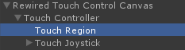
This is done because of how Unity UI's raycasting system works. If the Touch Region were to be ordered after the Touch Joystick, it would block raycasting to the Touch Joystick and capture the touch events instead. Since we want the user to be able to interact with both the Touch Joystick and the Touch Region, make sure the Touch Joystick is ordered after the Touch Joystick.
That's it! You should now have a working set of Touch Controls.
Help
Tips
To reduce draw calls, make sure Sprite packing is enabled.
Go to the menu:
Edit -> Project Settings -> Editor
Under "Sprite Packer", make "Mode" is set to "Always Enabled"
Controls can have their colors changed by setting the colors in the Color Tint transition settings. While this works for many sprites, it doesn't result in a proper look for some sprites. Take a shiny button for example:
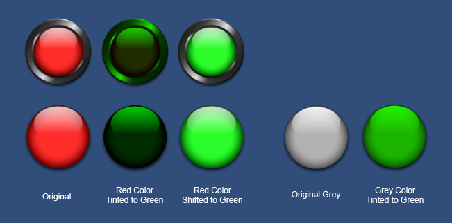
You can see that the color tinted versions lose the glossy white shine on the button surface, even on the grey button tinted to green. To get around this issue, a custom shader is used to shift the colors (a type of hue adjustment) on the red button turning it into a green button and preserving the glossy white shine.
All of the red sprites included in the Rewired/Extras/TouchControls/Sprites folder can be used with this Color Shift shader to get a variety of colors. Premade materials are included in the Rewired/Extras/TouchControls/Materials/ColorShift folder which you can apply to the Image component by dragging the material into the Material field.
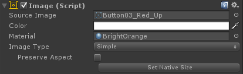
A disadvantage to this approach is that each control that uses a different material will require an additional draw call. If you need to have many different color controls shown on the screen at once you may want to instead use pre-baked sprites instead of using shader to recolor them dynamically. This will allow you to use the same material on all your controls and save draw calls, but it comes at the cost of texture memory. Some packs of pre-baked colored sprites are included at
Rewired/Extras/TouchControls/Sprites/ under object type directory. Sprite packs are named SpritePack_xxx.zip. Unzip them and you can use the sprites on your controls with the default sprite shader (no material). Be sure to delete any extra sprites you are not going to use as they will take space in sprite atlases even if you do not use them.
Troubleshooting
You should have at least a basic understanding of how to use Unity UI. If you do not, you should start by going through Unity's tutorials and documentation. Unfortunately, I cannot provide support on how to use Unity UI.
Problems with Layout Components
Do not attach any Unity UI Layout components (ones that lock the anchored position such as Horizontal Layout) to the parent object of a Touch Button or Touch Joystick if using Move to Touch or Follow Touch Position. The Layout component will prevent the control from moving properly and will result in unpredictable behavior. If you need to use these layout components on a control, wrap the control in another GameObject so that game object's position is constrained by the Layout element and the control's is not.
Problem: The control Image is not updating when changing transition settings (Color Tint, etc.) in the editor.
You must have the Target Graphic field set to the primary Image used by the control.
Examples
Example files are located in Rewired/Extras/TouchControls/Examples.